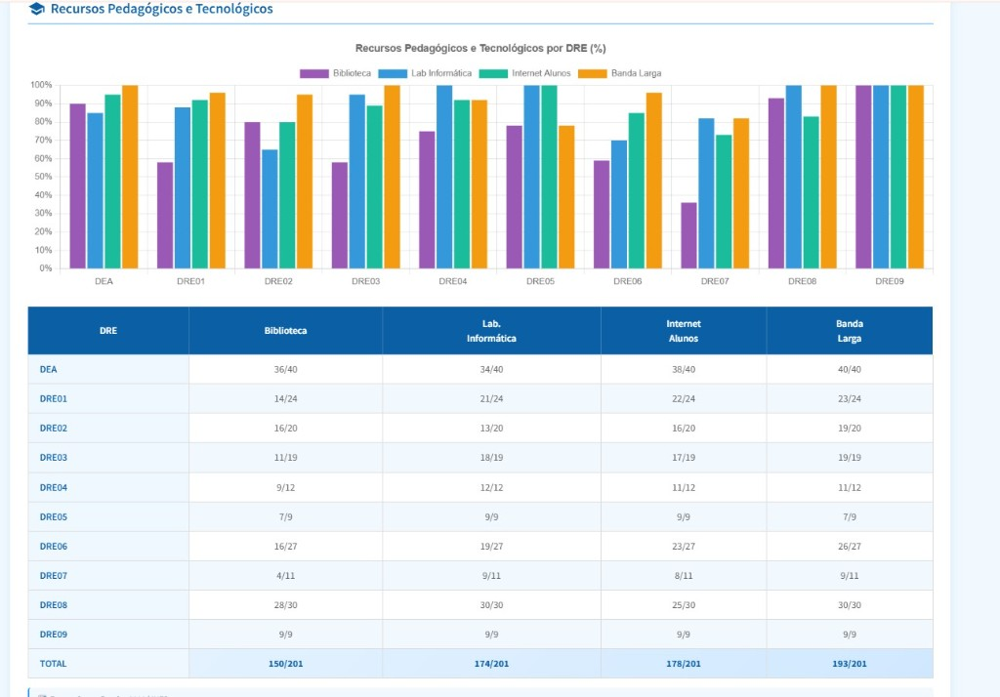
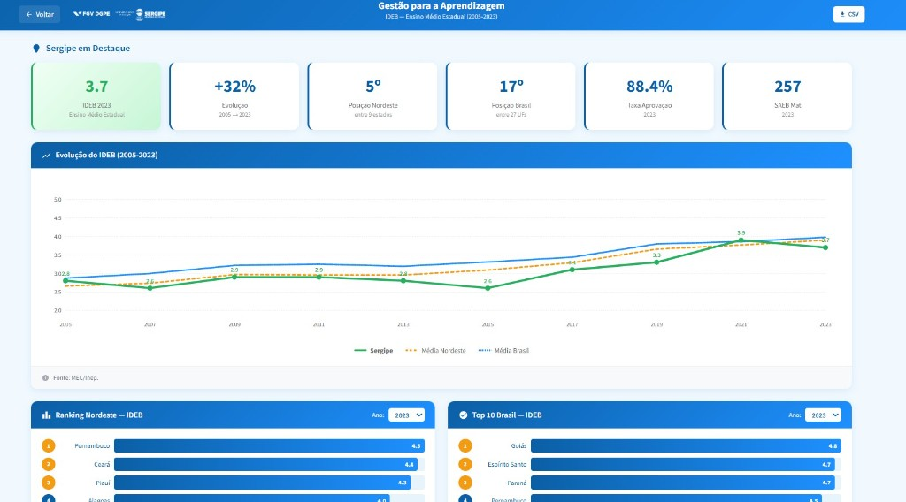
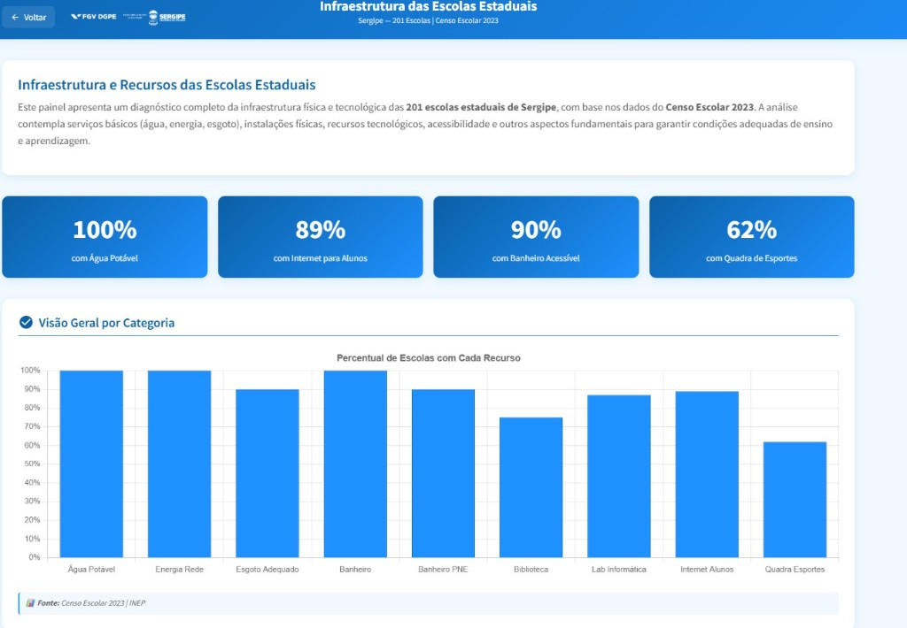
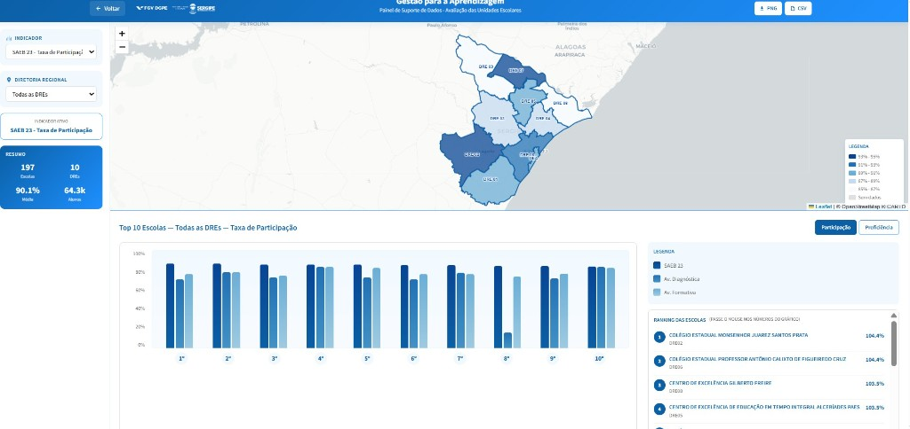
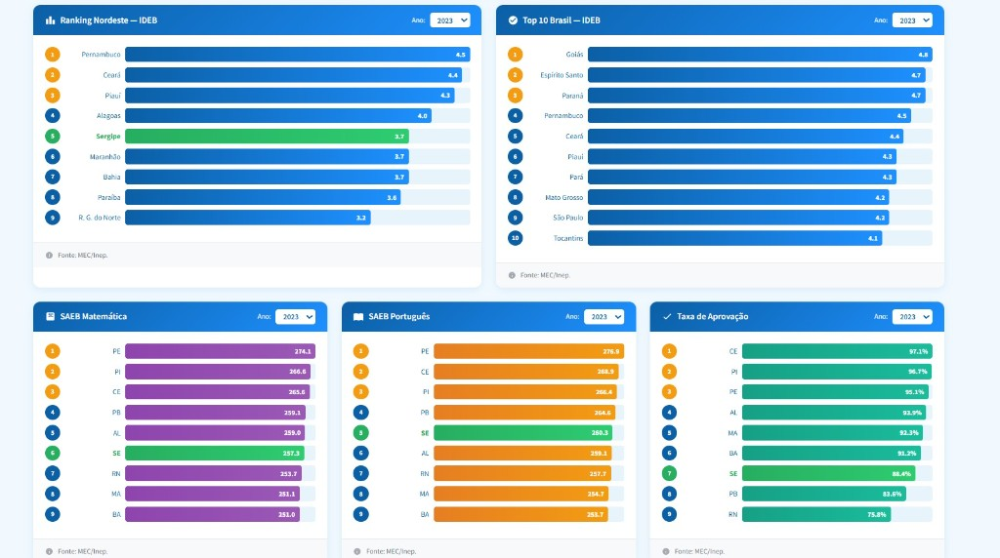

Infraestrutura de dados integrada para monitoramento da qualidade educacional
O monitoramento da qualidade da educação pública no Brasil baseia-se em indicadores produzidos pelo INEP (Instituto Nacional de Estudos e Pesquisas Educacionais), com destaque para o IDEB (Índice de Desenvolvimento da Educação Básica) e os dados do Censo Escolar. A equipe de gestão da SED Sergipe necessitava de uma infraestrutura de dados que consolidasse esses indicadores em um painel analítico, permitindo análises comparativas entre estados, regiões e séries históricas.
Os dados provinham de múltiplas fontes, anos e formatos — exigindo um pipeline estruturado para torná-los analiticamente úteis.





Construí um repositório integrado de dados e um pipeline para indicadores de qualidade educacional:
A base integrada de indicadores permitiu à equipe de gestão da SED Sergipe realizar análises comparativas do desempenho educacional do estado em relação a outras unidades da federação e às metas nacionais. Os dados alimentaram painéis de monitoramento utilizados em reuniões estratégicas e subsidiaram o planejamento de ações voltadas à melhoria dos indicadores de qualidade da educação básica — fornecendo a base analítica para decisões de política educacional baseadas em evidências no nível estadual.